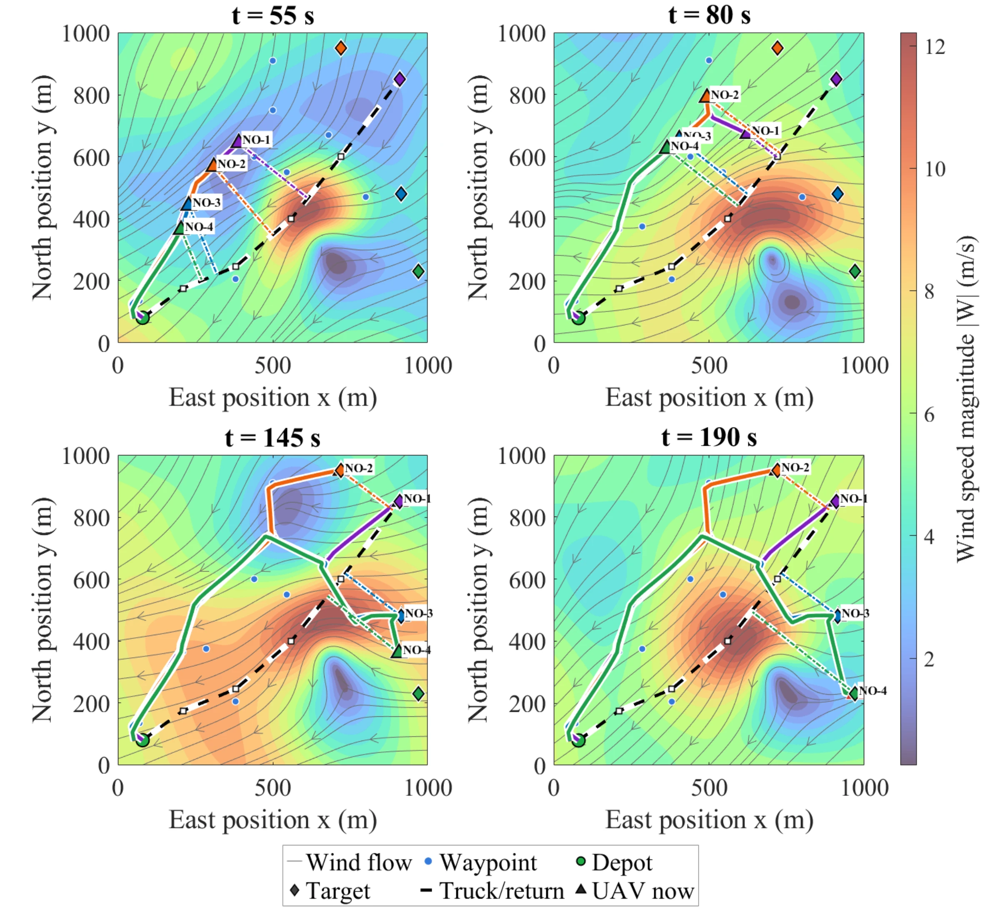
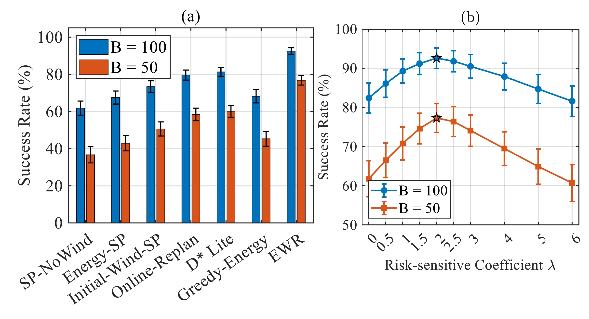
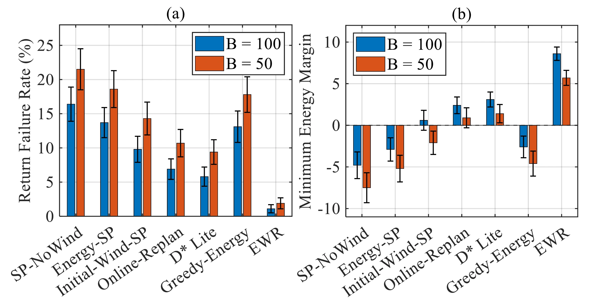

AIR–GROUND DELIVERY · 2026
Wind-Resilient Truck–UAV Delivery
Energy-Aware Wind-Resilient Routing for Truck-Assisted Multi-UAV Delivery under Wind Uncertainty
- 1The Hong Kong University of Science and Technology (Guangzhou), China
- 2Southern University of Science and Technology, China
- 3Intelligent Transportation Thrust, Systems Hub, The Hong Kong University of Science and Technology (Guangzhou), China
- *Corresponding author

OVERVIEW
Fly an edge only if the UAV can still get back
In truck–UAV delivery, each UAV has to complete its assigned deliveries and still return safely to a mobile truck or depot, while wind changes the propulsion cost of every flight segment online and is only partially observable. Routing on static or deterministic energy models can underestimate headwind, crosswind and return-feasibility risks. EWR (Energy-Aware Wind-Resilient Routing) is an online risk-sensitive planning framework: it represents the delivery environment as a time-dependent directed energy graph whose edge costs are updated from delayed, noisy wind estimates, payload states and conservative uncertainty margins. In simulation on synthetic delivery graphs with replayed wind logs, EWR improves mission success rates and reduces wind-induced return failures.
-
01
Wind as an uncertain estimate
The planner only has a delayed wind estimate for each edge, with a bounded error. EWR carries that error radius into reachability, energy prediction and the safety margin instead of trusting the latest reading.
-
02
Return feasibility, checked online
During execution EWR keeps evaluating segment energy, the energy needed to return to the truck or depot, and the safety margin. A mission that can no longer return safely ends in a safe abort, not a return failure.
-
03
A margin that adapts
In place of a fixed energy reserve, the safety margin grows with the uncertainty of the wind-aware energy prediction, with battery state-of-charge estimation error, and with the mission phase.
METHOD
A time-dependent energy graph with risk-sensitive edge costs
Task allocation comes first: wind-aware clustering, truck route planning and UAV–customer assignment. EWR then routes on a time-dependent directed energy graph whose vertices are feasible waypoints and whose edges are flyable segments. At each decision step it updates the edge costs from the available wind estimate, checks that a feasible return to the truck or depot remains, and selects a route; execution feeds updated wind observations and battery state back into the graph. The UAVs are coordinated only through the shared mobile platform and common safe-return constraints; each UAV's route is planned separately.
![Block diagram in four columns. System inputs: customer nodes, mobile truck or depot, UAV battery state, payload demand, wind observations and obstacle map. Task allocation: wind-aware clustering, truck route planning and UAV–customer assignment. Cooperative EWR: a time-dependent energy graph, wind-updated edge costs, and a return feasibility check that leads to a safe abort when return is not feasible and to risk-aware route selection when it is, repeated as online continuous updates. Outputs: parcel delivered, safe return, abort decision and energy margin. An execution-feedback loop returns updated wind observations and battery state to the planner.](assets/media/framework.webp)
-
Relative wind model
The delayed wind estimate on a segment is split into components along and across the planned path. A conservative reachability filter rejects the edge when the crosswind plus the estimation-error radius exceeds a set fraction of the airspeed, or when the worst-case ground speed is not positive.
-
Edge energy
Predicted energy is the traversal time at the estimated ground speed multiplied by power: nominal cruise power, a headwind or tailwind term, a payload term, and an extra term for rejecting lateral wind, which is not treated as energy-neutral for a multi-rotor.
-
Risk-sensitive cost
Each edge costs its predicted energy plus λ times an uncertainty penalty. The penalty grows with the wind-error radius, the sensing delay and the change from the previous accepted estimate, so edges with partially observed wind, stale updates or abrupt local changes are avoided.
-
Adaptive safety margin
The margin adds, to a minimum emergency reserve, terms for the standard deviation of the energy prediction, state-of-charge estimation error and a mission-phase risk indicator. Wind-induced energy error is bounded by a local Lipschitz constant times the wind-error radius.
RESULTS
Simulated missions under replayed wind
All experiments are simulations: controlled synthetic delivery graphs, with time-indexed wind logs streamed during the run to update edge costs online. The wind logs come from a public ATS-based truck–UAV delivery dataset and, for validation, from a recorded ASOS weather-station log. EWR is compared with six baselines (SP-NoWind, Energy-SP, Initial-Wind-SP, Online-Replan, D* Lite and Greedy-Energy) under a full battery budget (B = 100) and a low one (B = 50), with 100 rounds per setting. The UAV parameters are those of a small rotary-wing delivery UAV: 12 m/s nominal airspeed, a 100 Wh battery and a 10 Wh emergency reserve.
- Mission success · ASOS wind-log replay
- 86.5%
- All assigned deliveries completed and the UAV safely back, at B = 100; the best baseline, D* Lite, reaches 78.4%. Table III.
- Return failure · ASOS wind-log replay
- 2.8%
- Missions in which a UAV cannot safely return for lack of energy, against 7.9% for D* Lite and 19.6% for SP-NoWind. Table III.
- Minimum energy margin · ASOS wind-log replay
- 6.91 Wh
- A positive margin means return stayed feasible throughout the mission; SP-NoWind and Energy-SP are negative. Table III.
- Planning time · 100 customers, 12 UAVs
- 158.6 ms
- Average per decision step on the largest tested graph, 352 nodes and 3486 directed edges. Table II.
Replay of a recorded weather-station wind log
Here the simulated wind traces are replaced by wind speed, direction and gust measurements from an Automated Surface Observing System (ASOS) station, obtained through the Iowa Environmental Mesonet and replayed in the simulation. EWR has the highest mission success rate, the lowest return failure rate and the largest minimum energy margin. The paper notes that the improvement is most evident when the log contains abrupt changes in wind direction or gust intensity.
Table III of the paper: validation under real-world wind-log replay, B = 100. Rsucc: mission success rate; Rfail: return failure rate; Mmin: minimum energy margin.
| Method | Rsucc ↑ (%) | Rfail ↓ (%) | Mmin (Wh) |
|---|---|---|---|
| SP-NoWind | 58.7 ± 3.9 | 19.6 ± 2.8 | −6.42 ± 1.31 |
| Energy-SP | 64.3 ± 3.6 | 16.8 ± 2.5 | −4.75 ± 1.18 |
| Online-Replan | 76.9 ± 3.1 | 8.7 ± 1.9 | 1.62 ± 0.74 |
| D* Lite | 78.4 ± 2.9 | 7.9 ± 1.7 | 2.08 ± 0.69 |
| EWR | 86.5 ± 2.4 | 2.8 ± 0.9 | 6.91 ± 0.86 |
Success and return failure are not complementary: the remaining trials are safe aborts, in which the UAVs end the mission before reaching an unrecoverable return-failure state. A negative Mmin indicates an energy-unsafe state.
Battery budgets and return safety
With the dataset wind logs, EWR has the highest success rate under both battery budgets, in the paper's words approximately 92% at B = 100 and above 75% at B = 50. It also has the lowest return failure rate under both budgets and keeps a clearly positive minimum energy margin, while most baselines have negative or near-zero margins, especially at the lower budget. The sensitivity of EWR to the risk coefficient λ is shown in Fig. 3(b).


Scalability
From 10 customers and 2 UAVs to 100 customers and 12 UAVs, the average planning time per decision step stays below 160 ms and the success rate stays above 80%. Success falls gradually with scale as more UAVs, longer routes and denser wind-exposed edges make energy-critical decisions more likely.
Table II of the paper: scalability of EWR with graph size and number of UAVs. Values after ± are the standard deviation across 100 trials.
| Customers | UAVs | Nodes | Edges | Planning time per step (ms) | Rsucc (%) |
|---|---|---|---|---|---|
| 10 | 2 | 42 | 186 | 3.8 ± 0.6 | 93.1 ± 2.4 |
| 20 | 4 | 78 | 412 | 7.6 ± 1.1 | 91.7 ± 2.7 |
| 30 | 6 | 116 | 728 | 14.9 ± 2.3 | 89.4 ± 3.1 |
| 50 | 8 | 184 | 1326 | 31.5 ± 4.8 | 86.8 ± 3.6 |
| 75 | 10 | 268 | 2244 | 64.2 ± 8.7 | 83.5 ± 4.2 |
| 100 | 12 | 352 | 3486 | 158.6 ± 15.4 | 80.9 ± 4.8 |
Scope
The paper states the conditions: every result comes from log-replay simulation on synthetic delivery graphs, and “real-world” in Table III refers to the recorded wind log, not to flights. The truck trajectory and UAV–customer assignments are generated before online routing, and all UAVs are assumed to share identical flight dynamics, cruising speed and battery endurance. Two limitations are named: the model does not predict unforeseen sudden strong wind gusts, and battery ageing is not in the energy model. An earlier preprint by the same authors, arXiv:2604.13441, also studies energy-aware routing for truck–UAV delivery under uncertain wind.
CITATION
@misc{li2026energyaware,
title={Energy-Aware Wind-Resilient Routing for Truck-Assisted Multi-UAV Delivery under Wind Uncertainty},
author={Li, Tianshun and Sheng, Yanggang and Lu, Hongliang and Wang, Zhongzhen and Li, Haoang and Zheng, Xinhu},
year={2026},
eprint={2608.11641},
archivePrefix={arXiv},
primaryClass={eess.SY},
url={https://arxiv.org/abs/2608.11641},
}